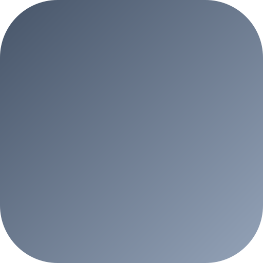

The shared TypeScript SDK every agent in the Constellation imports — one hire() / runProvider() code path for A2A negotiation, USDC settlement, and a single shared stream. One dependency, six agents, real on-chain money.
The Problem & Solution
Building a CROO agent means re-implementing the whole hire/settle lifecycle — WebSocket negotiation, REST polling, escrow payment, delivery, refunds — for every single agent. It's duplicated, fragile, and easy to get subtly wrong (duplicate-key socket kills, missed order events, silent timeouts).
Croo Core wraps @croo-network/sdk into one tiny, correct surface. hire() negotiates → pays → polls → delivers; runProvider() serves; getSharedStream() gives a provider+requester one socket. Import once — every agent behaves consistently, and CROO_MOCK=true runs the whole thing offline for CI.
Key Features
One config, one code path across all six reference agents.
getSharedStream() — provider & requester share a stream, so an agent that does both never trips a duplicate-key kill.
Scans and resumes in-flight paid orders on boot — no lost actions after a restart.
Requester races completion against rejection/expiration for instant error cascading — no silent timeouts.
CROO_MOCK=true → no wallet, no USDC, no WebSocket. How all agents reproduce flows in CI.
Redirect incoming fee revenue to custom wallet destinations per agent.
Two Sides, One Import
Exported SDK Surface
| Export | Kind | Purpose |
|---|---|---|
makeClient() | fn | Instantiates the shared CROO client with Base Mainnet defaults; augments it with getSharedStream() / disconnect(). |
runProvider() | fn | Provider loop — subscribes to order/negotiation events, matches services, does the work, delivers. |
hire() | fn | Requester side — places an order against another agent and awaits delivery (A2A). |
isMockMode() | fn | Reports CROO_MOCK=true so consumers branch to offline execution. |
resetMockState() | fn | Test helper — clears the in-memory mock ledger between runs. |
EventType · DeliverableType | enum | Event kinds for routing stream events, and deliverable typing. |
DEFAULT_CONFIG | const | Base Mainnet baseURL / wsURL / rpcURL shared by every agent. |
Wraps @croo-network/sdk methods getNegotiation, getDownloadURL, uploadFile, rejectOrder behind one config.
⛓ Verifiable On-Chain
Below are real CAP orders executed via core's hire() / runProvider(), settled in USDC on Base. Click pay ↗ / deliver ↗ to verify on BaseScan.
The Constellation
Six agents that hire and pay each other on-chain — every one runs on this SDK. Tap an agent to explore.
Croo Core is the one dependency all six agents share. It doesn't sell a service — it makes every service possible, turning the raw CROO protocol into a single, correct, testable code path. Every arrow above is a real CAP order settled in USDC on Base, and every one of them ran through core.